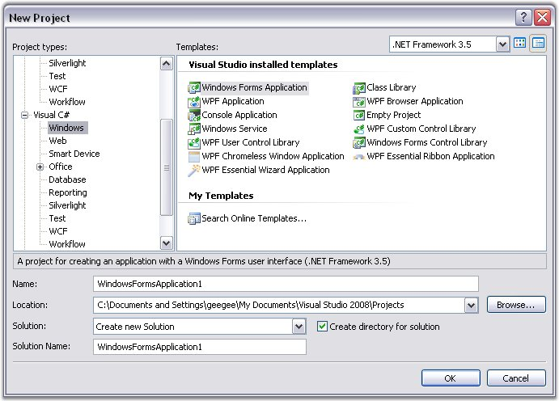
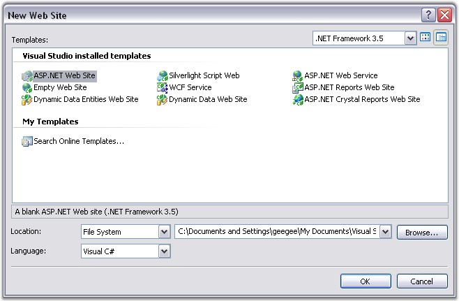
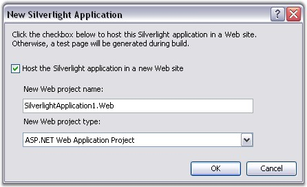

This section illustrates the step-by-step procedure to create the following platform applications.
· Windows
· ASP.NET
· WPF
· Silverlight
· ASP.NET MVC
Windows Application
1. Open Microsoft Visual Studio. Go to File menu and click New Project. In the New Project dialog box, select Windows Forms Application template, name the project and click OK.

Figure 11: Windows Forms Application template selected in the New Project Dialog Box
A Windows application is created.
2. Now you need to deploy Essential DocIO into this Windows application. Refer Windows topic for detailed info.
ASP.NET Application
1. Open Microsoft Visual Studio. Go to File menu and click New Web Site. In the New Website dialog box, select ASP.NET Web Site template, name the website and click OK.

Figure 12: ASP.NET Web Site template selected in the New Web Site Dialog Box
An ASP.NET application is created.
2. Now you need to deploy Essential DocIO into this ASP.NET application. Refer ASP.NET topic for detailed info.
WPF Application
1. Open Microsoft Visual Studio. Go to File menu and click New Project. In the New Project dialog box, select WPF Application template, name the project and click OK.
Figure 13: WPF Application template selected in the New Project Dialog Box
A new WPF application is created.
2. Open the main form of the application in the designer.
3. Now you need to deploy Essential DocIO into this WPF application. Refer WPF topic for detailed info.
Silverlight Application
1. Open Microsoft Visual Studio. Go to File menu and click New Project. In the New Project dialog box, select Silverlight Application template, name the project and click OK.

Figure 14: Silverlight Application template selected in the New Project Dialog Box
A New Silverlight Application dialog box appears as follows.

Figure 15: New Silverlight Dialog Box
2. Click OK to host the Silverlight application in a new website.
A new Silverlight application is created.
3. Open the main form of the application in the designer.
4. Refer Silverlight topic to know how to deploy Essential DocIO to the application.
ASP.NET MVC Application
Refer ASP.NET MVC -> Grid -> Getting Started -> Creating an MVC application topic to know how to create an MVC application.
To know how to deploy Essential DocIO to this application, refer ASP.NET MVC topic.
See Also